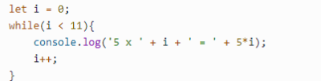
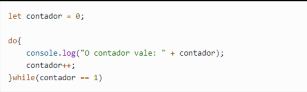
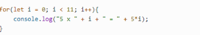

Não tem problema tentar de novo, mas não repita o mesmo erro da ultima vez...

Estruturas de repetição
Estruturas de repetição em JavaScript são usadas para executar um bloco de código repetidamente até que uma condição seja atendida. Existem dois tipos principais de estruturas de repetição no JavaScript: fore e while. Vamos ver como elas funcionam:
While
Podemos utilizar a estrutura de repetição while caso seja necessário repetir um bloco de comandos por N vezes.

A sintaxe do while, como vemos no exemplo acima, é bem simples. Utilizamos a palavra reservada while , logo em seguida precisamos passar uma condição que será atendida enquanto ela retornar true, ou seja, verdadeiro. Neste caso, simulamos a tabuada do 5, a variável i é o nosso contador, iniciamos ela com o valor 0 , portanto a condição será verdadeira até que ela atinja o valor 11, e por isso ela é iterada a cada repetição - i++, ao atingir tal valor o laço é quebrado.
Do While
O do-while tem o mesmo conceito que o while com uma única diferença, a condição é verificada após os comandos do bloco serem executados, ou seja, mesmo que a condição seja falsa, é garantia que o bloco será executado ao menos uma vez. Podemos testar da seguinte forma:

A variável contador foi inicializada com o valor 0 e o while está com a condição contador == 1 ou seja, a condição é falsa e utilizando o while nosso bloco de comandos não seria executado. Porém podemos perceber que ao utilizar do-while, o bloco vem antes da verificação da condição, com isso ele garante que o bloco de comandos seja executado ao menos uma vez.
For
A estrutura de repetição for no JavaScript segue o mesmo princípio que o while, porém este recurso é mais utilizado quando se sabe o número de iterações da repetição, como ao percorrer um vetor, por exemplo:
